EntropIA Lite
Manual de usuario
Versión de EntropIA: 1.0.16 · Actualizado: 25 de septiembre de 2026
Para comprobar qué versión tenés instalada, mirá la barra inferior.
Dirigido a: investigadores, docentes, estudiantes y personas que trabajan con documentos, imágenes, PDF, audio y archivos de investigación.
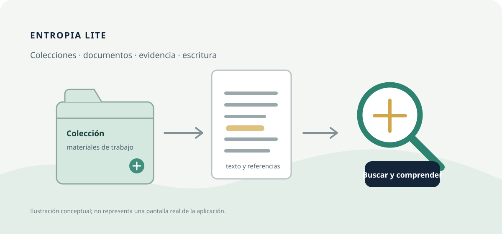
Cómo leer las imágenes. Las láminas de esta edición son diagramas orientativos, no capturas de pantalla. Los nombres de pantallas y controles corresponden a la interfaz actual de EntropIA Lite; la distribución puede variar según la vista abierta.
Capítulo 1. Inicio rápido
Si es la primera vez que utilizás EntropIA Lite, empezá por acá. En este recorrido vas a crear una colección, importar un documento, obtener su texto y encontrar una palabra dentro del material.
1.1. Qué vamos a hacer
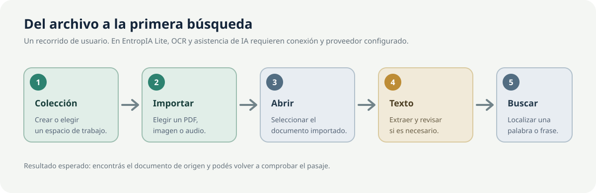
Elegí un PDF escaneado o una imagen PNG o JPG que puedas usar como ejemplo. Si contiene información privada, elegí otro archivo para probar: al pedir el reconocimiento de texto, EntropIA envía la página o imagen al servicio GLM-OCR por Internet.
Antes de empezar: para reconocer texto en imágenes o PDF, Lite necesita conexión a Internet y una clave de acceso de GLM-OCR. Si ya está configurada, seguí con el paso 1. Si no, abrí Configuración → APIs remotas → GLM-OCR, pegá la clave, pulsá Probar conexión y luego Guardar cambios. La clave se obtiene en la cuenta del proveedor; EntropIA no crea esa cuenta por vos. Más detalles en Configuración.
1.2. Conocer la pantalla principal
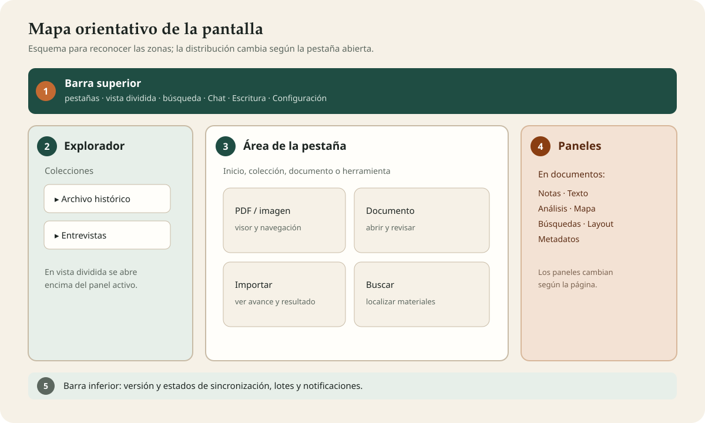
- Barra superior: pestañas de trabajo, Abrir nueva pestaña, Vista dividida, búsqueda general y accesos a Chat de investigación, Agente de investigación, Escritura, Base de datos y Configuración. Los botones con solo un ícono muestran su nombre al pasar el cursor.
- Explorador: colecciones y, dentro de ellas, documentos y páginas o archivos. En una sola pantalla queda a la izquierda. En vista dividida se abre encima del panel activo.
- Área de trabajo: lo que muestra la pestaña activa. Puede ser Inicio, una colección, un documento u otra herramienta.
- Paneles: herramientas que cambian según la vista. En un documento aparecen Notas, Texto, Análisis, Mapa, Búsquedas, Layout (estructura de la página) y Metadatos (datos descriptivos del archivo).
- Barra inferior: versión y, cuando corresponde, estados de sincronización, lotes y notificaciones.
1.3. Crear o seleccionar una colección
Una colección es el espacio donde vas a reunir fuentes de un mismo proyecto, tema o fondo documental.
- En Colecciones, pulsá el botón Nueva colección. También podés usar el botón con forma de carpeta y signo más del explorador lateral.
- Escribí un nombre en Nombre de la colección. Por ejemplo:
Prensa local, 1930–1940. - Si querés, agregá una Descripción (opcional). Podés dejarla vacía.
- Pulsá Crear colección.
- Comprobá que aparece la nueva tarjeta en la pantalla. Pulsá su nombre para abrirla.
Si ya existe una colección adecuada, abrila en lugar de crear otra.
1.4. Importar el primer documento
- Dentro de la colección, pulsá el botón Importar documento. También podés arrastrar archivos desde el Explorador de Windows y soltarlos sobre la colección.
- En el selector de archivos, elegí uno o varios PDF, imágenes o audios admitidos y confirmá.
- Esperá a que termine la importación. La sección Resumen de importación muestra el avance y luego indica cuántos archivos se importaron, omitieron o fallaron.
- Revisá la lista de documentos; el título inicial se basa en el nombre del archivo.
- Seleccioná un documento de la lista para abrirlo.
La importación no ejecuta OCR ni transcribe audio automáticamente. La lista completa de formatos aparece en Crear y organizar una colección de documentos.
1.5. Abrir el documento
- En la colección, seleccioná la tarjeta del documento.
- Para recorrer sus páginas o archivos asociados, usá Página anterior y Página siguiente en el panel del visor o el explorador lateral.
- En imágenes y PDF, usá los controles de zoom del visor para acercarte o alejarte. Si la letra es pequeña, también podés ampliar toda la interfaz con el control de zoom de la barra superior.
- En el panel derecho, seleccioná la pestaña Texto para trabajar con el texto asociado a la página abierta.
1.6. Obtener el texto
Si ya hay texto procesado, elegí Texto extraído para verlo. Si todavía no hay texto, el documento no aparece automáticamente por el solo hecho de importarlo.
- Con un PDF o una imagen PNG/JPG abierto, elegí Texto en el panel derecho.
- Pulsá OCRH para reconocer las palabras visibles en la página y esperá a que termine.
- EntropIA envía la página o imagen al servicio GLM-OCR. Necesitás conexión a Internet y una clave de acceso válida.
- Cuando aparezca el resultado, comparalo con la página original.
El reconocimiento de texto convierte las palabras visibles en texto digital que EntropIA puede buscar y analizar. La lectura automática puede equivocarse; la página original sigue siendo la referencia.
1.7. Revisar el resultado
- Confirmá que el texto corresponde a la página seleccionada.
- Revisá nombres propios, fechas, números y palabras partidas entre líneas.
- Corregí a mano los errores importantes en el área de texto; el cambio se guarda automáticamente.
- Si corregiste el resultado con asistencia de IA y necesitás volver al OCR original, usá Restaurar OCR original. Antes de hacerlo, conservá aparte cualquier corrección manual que quieras mantener.
1.8. Hacer la primera búsqueda
- Escribí una palabra que veas en el texto en la búsqueda de la barra superior.
- Esperá a que aparezcan resultados y elegí el documento correcto. La búsqueda general puede encontrar materiales de distintas colecciones.
- Para encontrar palabras que ya aparecen en el texto, elegí Búsquedas → Buscar por texto similar (FTS). Esta opción compara palabras; no busca por significado.
- Si el texto recién reconocido no aparece, abrí Análisis en ese documento y pulsá INDEX para prepararlo para la búsqueda. Volvé a buscar cuando termine.
- Abrí el resultado y comprobalo en el texto o en la imagen original.
1.9. Primer flujo completado
Creaste o elegiste una colección → importaste un documento → obtuviste texto → revisaste el resultado → encontraste una palabra.
Ya conocés el recorrido básico. Para ampliar cada paso, seguí con organizar tus colecciones, OCR y transcripción y búsquedas.
1.10. Inicio rápido visual
1. Colección → 2. Importar → 3. Abrir → 4. Texto/OCRH → 5. Revisar → 6. Buscar
Si no hay resultados, comprobá que el texto esté guardado y usá Análisis → INDEX para prepararlo. Si OCRH falla, revisá la conexión y la clave en Configuración → APIs remotas.
1.11. Trabajar con varias pantallas
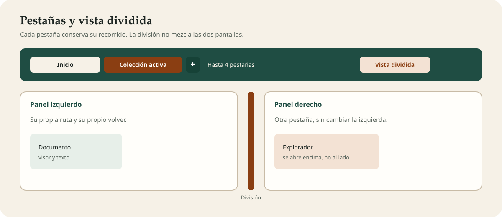
Podés tener hasta 4 pestañas. Cada una recuerda su propio recorrido: ← Volver en una no cambia las demás.
- Pulsá Abrir nueva pestaña, el signo más junto a las pestañas. La nueva se abre en Inicio.
- Elegí una pestaña por su nombre para volver a esa pantalla. El nombre sigue lo que esté abierto: una colección, un documento o una herramienta.
- Si hay más de una, pasá el cursor sobre la pestaña y pulsá Cerrar pestaña. La última no se puede cerrar.
- Al llegar a 4, el signo más se desactiva y muestra Límite de 4 pestañas alcanzado.
Vista dividida muestra dos pestañas al mismo tiempo:
- Pulsá Vista dividida en la barra superior.
- Si todavía no hay 4 pestañas, EntropIA abre una de Inicio al lado de la actual. Si ya hay 4, empareja la activa con la vecina.
- Arrastrá la división para cambiar el tamaño. Ningún lado baja de un cuarto de la vista. Un doble clic la devuelve al medio. Con el teclado, usá las flechas.
- Si la ventana es angosta para mostrar los dos lados, se apilan uno debajo del otro.
- Pulsá otra vez Vista dividida para volver a una sola pantalla. Las dos pestañas siguen abiertas.
En vista dividida, el explorador no ocupa una columna fija. Abrilo con Abrir explorador de documentos: aparece sobre el panel activo y no achica el otro. Cerrar explorador (Esc) o la tecla Esc lo oculta. Al cambiar de pestaña o salir de Colecciones, también se cierra.
Escritura puede estar abierta en una sola pestaña. Si la pedís desde otra, EntropIA te lleva a la que ya la tiene. Si una pestaña llega a Escritura mientras otra la está usando, verás Escritura está abierta en otra pestaña y el botón Ir a esa pestaña.
Si eliminás una colección, un documento o una página, desaparece de todas las pestañas que lo tenían abierto.
Capítulo 2. Introducción a EntropIA Lite
EntropIA Lite es una aplicación de escritorio para reunir materiales, reconocer texto, buscar información, tomar notas, analizar fuentes y redactar a partir de tus documentos.
Tus notas y archivos se guardan en este equipo. Para reconocer texto, transcribir audio y usar algunas funciones de inteligencia artificial, EntropIA se conecta por Internet a otros servicios. Esas tareas necesitan una clave de acceso válida.
Un flujo habitual es:
Organizar fuentes → importar → obtener texto si hace falta → revisar → buscar o analizar → registrar notas → redactar → exportar.
Las respuestas y resúmenes automáticos son ayudas para el trabajo. Comprobá siempre las citas, nombres, fechas y conclusiones en las fuentes originales. EntropIA no reemplaza la lectura crítica ni las reglas de citación de tu institución.
Capítulo 3. Conceptos básicos
| Concepto | Qué significa en la práctica |
|---|---|
| Colección | Un espacio para agrupar materiales de un tema, proyecto o fondo. |
| Documento o ítem | La ficha que aparece en una colección para representar un archivo. En algunos avisos de la interfaz aparece la palabra «ítem». |
| Asset | En algunos controles aparece «asset»: se refiere a una página o archivo dentro de un documento. |
| Corpus | El conjunto de documentos y colecciones que reunís para trabajar. |
| Texto extraído | Texto digital obtenido de una página, una imagen o un audio. No se crea solo al importar. |
| OCR | Reconocimiento de las palabras visibles en una imagen o PDF escaneado. En Lite se solicita por Internet. |
| Transcripción | Texto generado a partir de las palabras de un audio. En Lite se solicita por Internet. |
| Metadatos | Datos que describen un archivo, como su nombre, tipo y otros campos. |
| Tópico | Una etiqueta para clasificar un documento, por ejemplo migración o vivienda. |
| Nota | Una observación de investigación asociada a un documento o una página. |
| Búsqueda de texto (FTS) | Encuentra las mismas palabras que aparecen en el texto guardado; no busca sinónimos. |
| Embeddings | Una forma de representar el texto para que EntropIA compare páginas o archivos que tratan temas parecidos. Se usa con EMBED y Assets similares. |
| Recuperación | Selección de pasajes de tus documentos que el Chat puede usar para preparar una respuesta. |
| Pestaña | Una pantalla de trabajo independiente. Podés tener hasta cuatro, y cada una conserva su recorrido. |
| Vista dividida | Dos pestañas visibles al mismo tiempo, separadas por una división que podés mover. |
Capítulo 4. Crear y organizar una colección de documentos
4.1. Crear, buscar y mantener colecciones
En Colecciones podés crear un espacio, buscarlo por nombre, editarlo o eliminarlo. Las tarjetas muestran recuentos resumidos. Al abrir una colección, el panel de estadísticas ayuda a revisar el contenido registrado.
- Buscar colecciones... filtra los nombres de las colecciones.
- En una tarjeta, usá el control de edición para cambiar el nombre o la descripción y Guardar. Cancelar descarta los cambios del formulario.
- El explorador también permite filtrar colecciones, contraer el panel y crear una nueva. En una sola pantalla, Ctrl+B lo oculta o lo muestra. En vista dividida se abre encima del panel activo; el uso completo está en pestañas y vista dividida.
- No hay controles para ordenar manualmente las colecciones.
- Importar otro archivo crea un documento nuevo; no hay una acción para anexarlo a un documento existente.
Atención: eliminar una colección borra sus documentos y datos asociados. Confirmá el nombre y exportá la información que necesites antes de aceptar. No hay una acción de deshacer.
4.2. Importar archivos
Dentro de una colección, pulsá Importar documento o arrastrá los archivos sobre ella. Se permite seleccionar varios archivos.
| Tipo | Extensiones que se pueden importar |
|---|---|
.pdf |
|
| Imágenes | .png, .jpg, .jpeg, .webp, .tiff, .tif |
| Audio | .wav, .mp3, .flac, .m4a, .aac, .ogg |
EntropIA no importa directamente archivos .txt, documentos de Office ni el archivo JSON exportado desde una colección. Que un archivo se pueda importar no significa que sirva para reconocer texto: OCRH reconoce imágenes PNG/JPG/JPEG y PDF.
Cada archivo importado se guarda como una copia en este equipo; el original que elegiste no cambia. Un PDF de varias páginas se abre hoja por hoja para elegir cuál consultar. Si importás otra vez el mismo archivo sin cambios, EntropIA puede omitirlo porque ya lo agregaste. Si ese archivo ya se está importando en la misma colección, espera a la primera operación: si queda guardado, la segunda no crea otro documento.
Durante la importación, Resumen de importación informa qué archivo se procesa, el avance y cuántos se importaron, omitieron o presentaron un error. Leé los nombres rechazados o el mensaje antes de volver a intentarlo.
4.3. Organizar fuentes
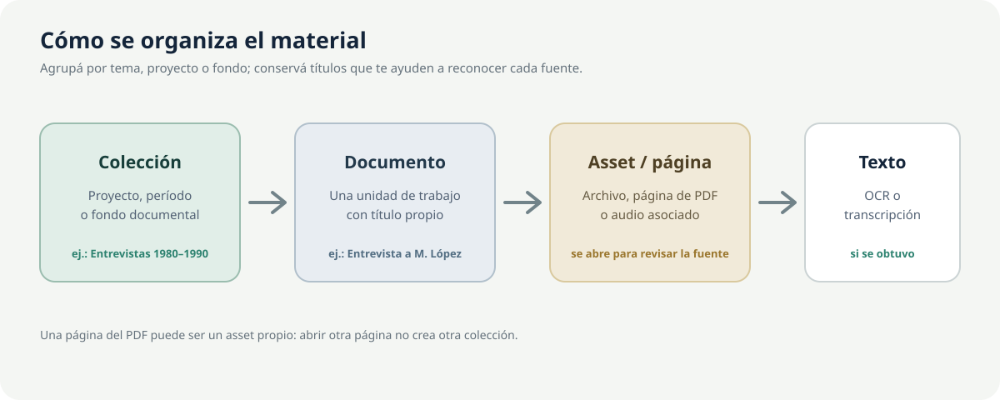
Una organización sencilla puede ser:
- Colección:
Entrevistas sobre vivienda. - Documento: una entrevista, una fotografía o un informe.
- Página o archivo: el audio, la imagen o una hoja concreta de un PDF.
- Texto: texto reconocido en una página o palabras transcritas desde un audio.
Usá nombres de archivo claros antes de importarlos: el título inicial del documento se basa en ese nombre. No hay una opción para mover documentos entre colecciones ni para ordenar sus páginas manualmente.
4.4. Buscar dentro de una colección
En la colección, Buscar documentos... filtra sus documentos. Para buscar contenido procesado en distintas colecciones, usá la búsqueda superior o Búsquedas; se explican en el capítulo 7.
4.5. Exportar una colección
El botón Exportar JSON guarda datos de la colección y sus documentos, textos y análisis, pero no incluye los PDF, imágenes o audios originales. No podés usar ese archivo para reconstruir la colección en EntropIA. Conservá por separado los archivos originales. Ver Exportar y descargar.
Capítulo 5. Trabajar con documentos, páginas y archivos
5.1. Abrir y recorrer un documento
Al abrir una tarjeta, el área principal muestra el visor y el panel de trabajo. Si un documento tiene varias páginas o archivos asociados, seleccioná la página o el archivo que necesitás en el explorador y usá Página anterior/Página siguiente para moverte.
Cada pestaña tiene su propia ruta, encima del contenido. Desde ahí podés usar ← Volver, volver a Colecciones o a la colección actual y, con un documento abierto, Documento anterior y Documento siguiente. Esos controles pertenecen a esa pestaña.
5.2. Visor de PDF e imágenes
En la pestaña Documento, usá las herramientas disponibles según el tipo de página o archivo:
- Mover imagen (mano): desplazar la vista.
- Acercar y Alejar: cambiar el zoom del visor.
- Herramienta de anotación rectangular y Herramienta de subrayado: agregar marcas a la página.
- Color de anotación: elegir el color de la marca.
- Recortar a la selección: recortar la zona seleccionada.
- Borrar región (relleno blanco): cubrir con blanco la zona elegida.
- Rotar 90° a la izquierda/derecha y Rotación fina: orientar la página con el giro deseado.
- Duplicar asset: crear una copia de la imagen o del PDF antes de continuar una edición.
- Deshacer última edición y Rehacer última edición: recorrer cambios recientes del visor.
- Eliminar anotación seleccionada: quitar la anotación marcada.
Las anotaciones se guardan con el documento. Para conservar una versión sin cambios, duplicá la página o archivo antes de recortarlo o modificarlo. Estas herramientas no corrigen errores del texto reconocido; revisalo por separado en Texto.
5.3. Reproductor de audio
Para escuchar un audio, usá Reproducir/Pausar, la barra de posición, los saltos disponibles y el control de volumen. Si tu equipo no puede reproducir el formato, EntropIA muestra un error; probá abrir una copia con otro reproductor o convertirla a un formato admitido.
5.4. Panel derecho del documento
- Notas: tópicos y observaciones ligadas al documento o a la página.
- Texto: texto reconocido, transcripción, edición, copia y descarga.
- Análisis: preparar texto para búsquedas, reconocer nombres y proponer relaciones.
- Mapa: lugares asociados al documento.
- Búsquedas: encontrar palabras o explorar materiales parecidos.
- Layout: estructura detectada en la página, como títulos, texto, tablas y figuras.
- Metadatos: datos descriptivos del archivo y campos que podés completar.
Podés ocultar el panel derecho y volver a mostrarlo con el control lateral.
5.5. Layout y metadatos
Layout aparece cuando hay secciones de la página detectadas y no se usa para audio. Podés filtrar Todos, Títulos, Texto, Tablas, Figuras o Notas. Seleccioná una sección para ubicarla en la página y ver sus detalles; desde ese panel podés copiar el texto, la ubicación o los datos en formato JSON. El control de superposición muestra u oculta las zonas marcadas en el visor.
En Metadatos, consultá los datos del archivo. Metadatos personalizados permite agregar un campo, editar su valor o quitarlo. No cambia el archivo original.
5.6. Eliminar un documento o una página
La papelera de una tarjeta elimina el documento completo y sus archivos y datos asociados. El control Eliminar página activa, junto a la ruta de esa pestaña, elimina solo la página o archivo seleccionado. La eliminación también lo quita de las otras pestañas que lo tenían abierto.
Atención: antes de eliminar, revisá el nombre y la confirmación. Si la página o archivo está citado en Escritura, EntropIA avisa: la cita conserva el pasaje guardado, pero deja de poder abrir la fuente original. La eliminación no reemplaza una copia externa del archivo.
Capítulo 6. Obtener texto de documentos
El texto permite buscar y analizar lo que aparece en una página o se dice en un audio. La importación no inicia automáticamente esta tarea. Abrí el documento y elegí Texto.
6.1. OCR de PDF o imagen
- Seleccioná un PDF o una imagen compatible.
- Abrí Texto y pulsá OCRH.
- Esperá a que finalice la solicitud.
- Leé el resultado y contrastalo con la página original.
- Corregí manualmente los errores relevantes si hace falta.
En Lite, OCRH envía la página o imagen por Internet al servicio de reconocimiento GLM-OCR y necesita una clave configurada en Configuración → APIs remotas. Esta variante no reconoce texto sin conexión (OCRL). Aunque se pueden importar archivos WebP/TIFF/TIF, OCRH no siempre los acepta; si necesitás reconocer una imagen, probá con una copia PNG/JPG.
6.2. Corregir o resumir el texto
| Acción visible | Para qué sirve | Requisito |
|---|---|---|
| OCRC | Proponer una corrección del texto reconocido. Revisá la propuesta antes de usarla. | Texto disponible y OpenRouter configurado. |
| OCRR o Resumen | Generar una síntesis del texto disponible. | OpenRouter configurado. |
| Restaurar OCR original | Volver al texto OCR original disponible después de una corrección. | Que exista un original recuperable. |
La corrección y el resumen son propuestas del modelo: pueden omitir datos o cambiar el sentido. Compará nombres, cifras y citas con el documento. Si editaste el texto a mano después de corregirlo, preservá primero lo que quieras conservar antes de restaurar.
6.3. Transcribir audio
- Abrí el audio y comprobá que se pueda reproducir.
- En el panel Texto, elegí STT para convertir la voz en texto.
- Esperá la transcripción y revisá el texto junto al audio.
- Corregí errores de nombres, turnos de habla o palabras dudosas.
- Si está disponible, pedí un Resumen del texto transcripto.
En Lite, la transcripción usa AssemblyAI y requiere Internet y una clave de acceso. El audio necesario para la tarea se envía a ese servicio. El dictado por micrófono en los editores también necesita este servicio.
6.4. Comprobar, copiar y descargar
La pestaña muestra el texto de la página o archivo abierto. Comprobá que corresponda a ese material. Podés editarlo; los cambios se guardan automáticamente. Copiar lleva el texto al portapapeles. Descargar permite obtenerlo como Markdown, PDF o Word (.docx).
Si hay bloques de layout disponibles, consultalos en Layout. No es una verificación de exactitud: revisá la imagen original.
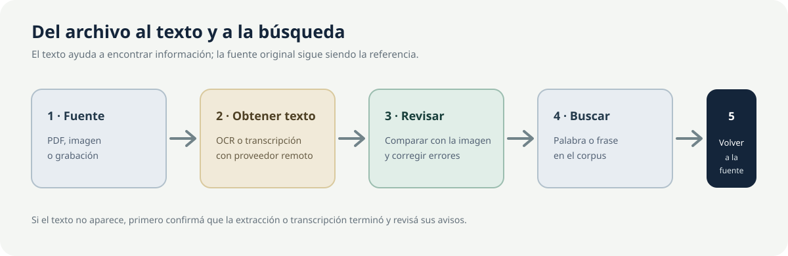
6.5. Si el texto no aparece
- Comprobá que abriste la página o el audio correctos y que la tarea terminó.
- Revisá el mensaje del servicio en Texto.
- Para buscar contenido, comprobá si hace falta Análisis → INDEX.
- Si el servicio no responde, revisá su clave y conexión en Configuración → APIs remotas.
- Si una foto está oscura, inclinada o borrosa, conservá el original y probá con una copia más clara y derecha.
Capítulo 7. Buscar información
EntropIA tiene varias búsquedas. Elegí la que corresponda; no todas buscan lo mismo.
| Dónde | Qué busca | Cuándo usarla |
|---|---|---|
| Buscar colecciones... | Nombres de colecciones. | Encontrar un espacio de trabajo. |
| Buscar documentos... | Documentos de la colección abierta. | Filtrar una colección por una palabra. |
| Búsqueda superior | Documentos y texto disponible del conjunto de colecciones. | Encontrar una palabra/frase y abrir un documento. |
| Búsquedas → Buscar por texto similar (FTS) | Encuentra palabras que aparecen en los documentos. Puede mostrar hasta 10 resultados de distintas colecciones. | Buscar una palabra o frase concreta. |
| Assets similares | Sugiere páginas o archivos que tratan temas parecidos a un material seleccionado. | Explorar fuentes relacionadas aunque no uses las mismas palabras. |
| Chat de investigación | Responde preguntas sobre texto reconocido en tus documentos y puede mostrar las fuentes. | Pedir una explicación que puedas comprobar en las fuentes. |
| Investigar | Desarrolla una pregunta de investigación a partir de colecciones seleccionadas y prepara un informe con fuentes. | Explorar una pregunta amplia paso a paso. |
7.1. Buscar una palabra o frase
- Escribí un término en la búsqueda superior o en Búsquedas.
- Revisá los resultados y la colección a la que pertenece cada uno.
- Abrí el resultado y comprobá el fragmento en el documento original.
- Si un OCR produjo una variante, probá también otras grafías o una parte distintiva de la frase.
La búsqueda de texto compara palabras que aparecen en el título, los datos o el texto reconocido del documento. No encuentra automáticamente sinónimos ni interpreta la intención de una pregunta. Para buscar dentro del contenido, primero reconocé el texto y, si aún no aparecen resultados, pulsá Análisis → INDEX para prepararlo.
En Búsquedas → Buscar por texto similar (FTS) pueden aparecer hasta 10 documentos; esta lista es distinta de los resultados de la búsqueda superior.
7.2. Buscar materiales parecidos
Para encontrar páginas o archivos parecidos con Assets similares, seleccioná uno que ya tenga texto, pulsá EMBED en Análisis y luego abrí Assets similares en Búsquedas. La herramienta compara su contenido con el de otros materiales preparados. En Lite necesita conexión a Internet y OpenRouter.
La vista previa permite leer el fragmento y, cuando está disponible, volver al documento de origen. La semejanza sirve como pista para revisar; no demuestra que dos fuentes digan lo mismo.
7.3. Llegar desde el resultado a la fuente
Al abrir un resultado, comprobá el título, la colección y la página o archivo. Usá la ruta de navegación para volver. Si necesitás una lista de citas y fuentes, consultá Chat de investigación o Investigar.
Importante: la búsqueda FTS encuentra palabras que aparecen en el texto; Assets similares sugiere materiales con contenido parecido. En ambos casos, comprobá la fuente original.
Capítulo 8. Analizar documentos y colecciones
8.1. Acciones de análisis por documento
Abrí Análisis en el panel del documento. Los indicadores muestran si una acción está pendiente, en curso, completa o con error.
| Acción | Qué hace | Cuándo usarla y resultado |
|---|---|---|
| INDEX | Prepara el texto reconocido para que puedas encontrar sus palabras. | Usalo si no encontrás palabras que aparecen en el texto. Compara palabras, no busca sinónimos. |
| EMBED | Prepara una página o archivo con texto para compararlo con materiales parecidos. | Usalo antes de Assets similares. En Lite requiere OpenRouter y conexión a Internet. |
| NER | Propone nombres de personas, lugares, instituciones y fechas. | Revisá los resultados en Entidades; en Lite usa un servicio por Internet. |
| TRIPLET | Propone relaciones entre elementos; por ejemplo, quién hizo qué. | Revisá cada relación y corregí sus partes si es necesario. En Lite requiere OpenRouter. |
Cada acción se realiza sobre la página o el documento abierto, según corresponda. Primero obtené y revisá el texto. No hace falta repetir una tarea completada, salvo que hayas cambiado el material.
8.2. Entidades, relaciones y mapa
En Entidades podés crear, editar o eliminar nombres de personas, lugares, instituciones o fechas. En Tripletas semánticas podés agregar o corregir quién hizo qué o qué relación aparece entre dos elementos. Revisá cada propuesta en la fuente.
La pestaña Mapa muestra lugares asociados al documento. Podés seleccionar un marcador, ajustar la ubicación y guardarla, o restablecerla cuando esté disponible. Ver el mapa y buscar lugares requiere Internet. Comprobá que cada lugar corresponda a la fuente.
8.3. Análisis textual de una colección
Dentro de una colección, abrí el panel lateral con Mostrar análisis textual. Este panel cuenta palabras de textos reconocidos y transcripciones guardadas; no genera resúmenes ni interpreta los documentos.
- Visualización: nube Top N palabras y gráfico Top 20 palabras. Cada gráfico puede descargarse como PNG.
- Parámetros: cambiar la cantidad de términos de la nube y agregar en Stopwords personalizadas las palabras que no querés incluir en el recuento.
- Ocultar análisis textual: cerrar el panel.
Si todavía no hay texto reconocido o transcripciones, la colección no tiene palabras para contar. Primero revisá el texto de sus documentos. El recuento usa los textos guardados en este equipo y no necesita una clave de IA.
Capítulo 9. Notas y tópicos
9.1. Clasificar con tópicos
En Notas, usá Tópicos para asignar palabras clave al documento, como censo, trabajo o vida cotidiana. Escribí un tópico y confirmalo con Enter o coma. Podés elegir sugerencias existentes y quitar un tópico con su control correspondiente.
9.2. Crear y editar notas
- Abrí la página o el archivo al que se refiere tu observación.
- En Notas, pulsá Agregar nota.
- Escribí en Escribí una nota... y usá el editor para aplicar negrita, cursiva, títulos, listas, citas o enlaces.
- Pulsá Guardar nota.
- Para leer una nota anterior, abrila en la lista. Editar nota permite cambiarla; Eliminar nota pide confirmación.
La nota puede quedar asociada al documento o a la página abierta. Al cambiar de página, revisá sus notas. Para dictar una nota, pulsá Iniciar dictado; necesitás permitir el uso del micrófono y tener AssemblyAI configurado en Lite.
9.3. Reutilizar notas al escribir
En Escritura → Notas, buscá una nota, abrila y revisá su origen. Insertar como texto copia el contenido como texto independiente. Insertar como vínculo agrega un enlace para volver a consultarla. El panel busca notas de todos tus documentos; no permite limitar la búsqueda a las colecciones de un manuscrito.
Si la nota vinculada cambia o desaparece, Escritura muestra su estado y conserva el texto del manuscrito. Si la nota ya no existe, el vínculo no puede abrirla.
También podés seleccionar una frase del manuscrito y usar Guardar la selección como nota; luego elegís el documento al que corresponde. Esta acción crea una nota, no una cita bibliográfica.
Capítulo 10. Investigación
Investigar permite plantear una pregunta, elegir colecciones y obtener un informe acompañado de fuentes. Es diferente de una búsqueda por palabra y del chat breve del capítulo 13.
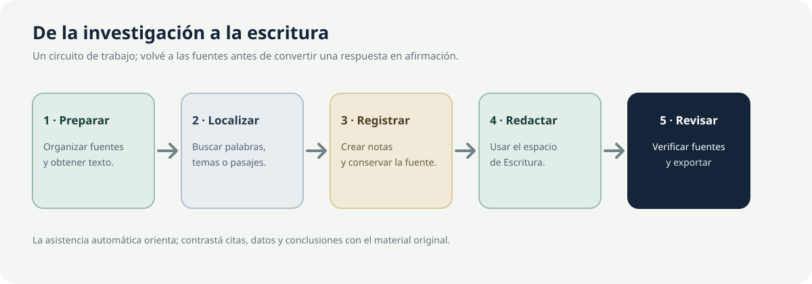
10.1. Crear una investigación
- En la barra superior, abrí Agente de investigación; la página se titula Investigar.
- En Nueva investigación, escribí una pregunta concreta y, si querés, un título.
- Abrí Alcance de colecciones. EntropIA puede proponer las colecciones que ya tienen fragmentos; revisá la selección, agregá o quitá colecciones y usá Seleccionar todas si corresponde.
- Seleccioná al menos una colección y pulsá Investigar.
- La tarjeta del trabajo aparece en la lista de investigaciones anteriores. Abrila para seguir el proceso y consultar el resultado.
La pregunta y el alcance determinan el material que el agente puede consultar. Prepará antes los documentos y el texto; sin fuentes procesadas, la evidencia será limitada.
10.2. Acompañar el proceso
Durante el trabajo, la vista puede pedir intervención:
- Preguntas antes de armar el informe: contestá lo que puedas. Si hace falta, usá Editar diseño para ajustar las ideas iniciales, el alcance y las condiciones para cerrar la investigación. Después, pulsá Responder y seguir.
- Búsquedas antes de consultar tus documentos: revisá las búsquedas propuestas. Podés aceptarlas con Aprobar y buscar o modificarlas en Editar búsquedas; después, pulsá Guardar y buscar.
- Si querés ajustar los límites de llamadas o costo, pausá el trabajo. Después podés continuarlo o cancelarlo. Revisá los límites antes de reanudar.
En Lite, Investigar necesita conexión a Internet y una clave de OpenRouter. Revisá qué contenido se enviará al servicio antes de trabajar con material sensible.
10.3. Leer y comprobar el informe
El informe puede incluir el planteo, cobertura por colección, hallazgos, limitaciones y Fuentes citadas. Revisá los avisos de fuentes sin texto o cobertura insuficiente.
- Seleccioná una cita
[n]para leer el pasaje y los datos de la fuente. - Usá Abrir el documento para regresar al material local cuando esté disponible.
- Contrastá la afirmación con la página, el audio o el texto original. Una cita no garantiza que el informe haya interpretado bien la fuente.
- Si necesitás ajustar una sección, usá Editar y guardá tu versión. La vista indica que modificaste el texto.
- Reescribir acepta una instrucción y genera otra propuesta sobre la evidencia del informe. Revisá la salida antes de incorporarla.
La investigación consulta solo las colecciones que seleccionaste. No busca en Internet ni en bibliografía pública. Al crearla no podés elegir un proyecto, un límite de costo o una forma de búsqueda.
10.4. Guardar o eliminar una investigación
El informe se puede descargar como Markdown, HTML o Word (.docx). La vista actual no ofrece PDF para este informe. Las investigaciones anteriores muestran estados y se pueden volver a abrir. Borrar la investigación requiere confirmación y elimina el informe y su información asociada; verificá antes que no necesites conservarlo.
Capítulo 11. Escritura
Escritura sirve para redactar un manuscrito y consultar tus documentos, las notas, Zotero y la ayuda contextual desde un mismo espacio.
11.1. Crear y abrir un manuscrito
- Abrí Escritura desde la barra superior. Si ya está abierta en otra pestaña, EntropIA te lleva a esa pestaña.
- Pulsá Documento nuevo. Si el manuscrito abierto sigue llamándose Sin título y no tiene texto ni imágenes, EntropIA vuelve a ese manuscrito en lugar de crear otro. Si ya le pusiste un título o agregaste contenido, crea uno nuevo.
- Seleccioná un documento de la lista para abrirlo.
- Editá el título en la parte superior y confirmalo al salir del campo.
La vista actual no importa un DOCX o un Markdown como manuscrito. Si ya tenés texto en otro archivo, podés copiarlo y pegarlo en un documento nuevo.
11.2. Escribir y navegar
El espacio reúne Esquema, el manuscrito y el panel de investigación. Podés cambiar el ancho de los paneles o esconder los que no necesites.
- El editor permite aplicar formato, títulos, listas, citas en bloque, notas al pie, enlaces, tablas, imágenes y alineación.
- Buscar localiza texto dentro del manuscrito; Reemplazar y Reemplazar todo permiten cambiar coincidencias.
- Para insertar una imagen, usá Insertar imagen, pegala o arrastrala dentro del manuscrito. Se admiten PNG, JPG/JPEG y GIF.
- Esquema muestra títulos de nivel 1 a 3. Seleccioná uno para saltar a esa sección; podés cambiar su título, moverla, agregar otra debajo o eliminarla con su contenido.
- El botón de dictado usa micrófono y transcripción remota; en Lite requiere AssemblyAI y conexión.
11.3. Guardado automático y revisiones
El manuscrito se guarda automáticamente; no hay un botón para guardarlo manualmente. La barra muestra Guardado, Guardando, Cambios pendientes o Error de guardado. Al cambiar de documento, salir de Escritura o cerrar su pestaña, EntropIA intenta guardar lo pendiente. Igual esperá a ver Guardado antes de cerrar la aplicación. El número junto a Revisión solo cuenta cambios; no permite abrir versiones anteriores.
La interfaz actual no ofrece una lista de versiones anteriores ni una acción para restaurarlas. Si el guardado falla, usá Reintentar cuando aparezca y conservá una copia del texto importante antes de cerrar.
11.4. Consultar tus documentos y citar una fuente
En el panel de investigación, abrí Corpus y escribí en Buscar en el corpus. Esta búsqueda solo encuentra texto que ya se reconoció; no lee la página mientras escribís. Si activás Incluir coincidencias aproximadas, también puede encontrar palabras escritas de forma parecida.
Abrí un resultado, elegí la página y marcá el pasaje que querés citar. Después, pulsá Insertar como cita.
La cita mantiene el vínculo con el documento y el pasaje. Si la fuente cambia, EntropIA avisa y no resalta un texto distinto como si fuera el fragmento original. Para agregar una referencia bibliográfica de Zotero, seguí el capítulo 12.
11.5. Usar notas, agente y exportación
Las cinco pestañas del panel son Corpus, Zotero, Notas, Agente y Exportar. Notas permite localizar notas asociadas a tus documentos e insertarlas como texto o vínculo. Agente trabaja sobre una selección y se explica en el capítulo 13. Exportar configura el formato de las citas y la bibliografía; el botón Descargar está en la barra del manuscrito.
11.6. Eliminar un manuscrito
Para eliminar un manuscrito, volvé a la lista de Escritura, usá su acción Eliminar y confirmá. El documento sale de la lista; no hay una vista de papelera ni un control para restaurarlo. Descargá una copia antes de eliminarlo.
11.7. Sincronización del manuscrito
Los manuscritos de Escritura se guardan en este equipo y no forman parte de la sincronización general entre dispositivos. Exportá una copia si necesitás moverlos o conservarlos fuera de la aplicación.
Capítulo 12. Zotero
Zotero aporta referencias bibliográficas al manuscrito. EntropIA consulta la biblioteca local de Zotero; no es un acceso a una cuenta web.
12.1. Conectar Zotero
- Abrí Zotero en el equipo.
- En Zotero, entrá en Editar → Configuración → Avanzado.
- Activá Permitir que otras aplicaciones se comuniquen con Zotero.
- Volvé a EntropIA, abrí Escritura → Zotero y esperá el estado de conexión.
- Cuando Zotero responda, la pestaña muestra referencias de la biblioteca y habilita Actualizar.
Si la conexión no funciona, EntropIA indica si Zotero no permitió la conexión, no respondió a tiempo o envió una respuesta que no pudo leer. La falta de respuesta no demuestra que Zotero esté cerrado o desinstalado. Es posible que sigan apareciendo referencias consultadas antes.
12.2. Buscar y citar
- En Buscar en tu biblioteca de Zotero, escribí autor, título o año.
- Al pulsar Enter, EntropIA también consulta Zotero. Revisá título, autoría y año de cada resultado.
- Pulsá Citar junto a la obra que querés incluir. Necesitás tener un manuscrito abierto.
- En Ajustar la cita, elegí el dato que ubica el pasaje, como una página o un capítulo. Marcá Ya nombré al autor en mi frase si corresponde. Si hace falta, completá Antes de la cita o Después de la cita.
- Revisá Así queda y pulsá Listo. Cancelar deja el manuscrito sin el ajuste.
El formato de cita inicial es APA; no podés elegir otro estilo desde EntropIA ni administrar bibliotecas o grupos de Zotero. La referencia guarda una copia de sus datos para que siga en el manuscrito aunque Zotero no responda más adelante.
12.3. Incluir bibliografía
En Escritura → Exportar, dejá activada Incluir bibliografía si querés que el archivo incluya la lista de obras de Zotero citadas. La bibliografía se construye con las referencias Zotero; no convierte las citas insertadas desde tus documentos en referencias de Zotero.
Capítulo 13. Chat y agentes de EntropIA
La interfaz tiene tres ayudas relacionadas, pero distintas:
- Chat de investigación: responde preguntas sobre tus documentos y muestra las fuentes asociadas a cada respuesta.
- Investigar: desarrolla una investigación con alcance por colecciones y produce un informe; ver capítulo 10.
- Escritura → Agente: propone cambios sobre un fragmento seleccionado del manuscrito.
Ninguna de estas herramientas sustituye la comprobación de la fuente.
13.1. Preguntar sobre tus documentos en el Chat
- Abrí Chat de investigación desde la barra superior.
- Escribí una pregunta de hasta 4000 caracteres sobre documentos cuyo texto ya se reconoció y preparó para la búsqueda.
- Pulsá Enviar. Enter envía; Shift+Enter agrega una línea.
- Revisá la respuesta y abrí Fuentes para comprobar los documentos y fragmentos citados.
- Pulsá una fuente para volver al documento de origen.
El Chat consulta los documentos disponibles; no permite elegir una colección ni busca en Internet. En Lite, las respuestas usan OpenRouter y requieren una clave de acceso y conexión. Si no encuentra pasajes relacionados con tu pregunta, puede indicarlo o responder sin fuentes útiles.
13.2. Conversaciones e historial
- Nueva conversación inicia otro hilo al enviar la primera pregunta.
- Conversaciones permite volver a un hilo, buscar en sus títulos/contenidos, renombrarlo o eliminarlo.
- Copiar respuesta incluye la lista de fuentes cuando está disponible.
- La conversación se puede descargar como PDF.
- Profundizar con el Agente transfiere la última pregunta y parte de la conversación a Investigar. Ese contexto no confirma por sí solo que una afirmación sea cierta; comprobá las fuentes del informe.
13.3. Agente de Escritura
En Escritura → Agente, seleccioná un pasaje del manuscrito y elegí una acción. Las opciones visibles son:
- Ortografía, Redacción, Claridad, Argumentación.
- Acortar, Desarrollar, Resumir, Reformular.
- Reiteraciones, Contradicciones.
- Evidencia, Contraevidencia, Contraejemplos, Notas.
Las primeras acciones trabajan sobre el pasaje seleccionado. Evidencia, Contraevidencia, Contraejemplos y Notas también consultan pasajes o notas relacionados. En Lite, estas acciones usan OpenRouter y envían al servicio el texto seleccionado y, cuando corresponde, pasajes de tus documentos.
EntropIA muestra el texto original, la propuesta, su explicación y la evidencia que logró recuperar. Vos decidís qué hacer:
- Reemplazar el pasaje original.
- Insertar debajo de la selección.
- Descartar la propuesta.
El agente no cambia el manuscrito automáticamente. Si el pasaje cambió desde que se creó la propuesta, revisalo antes de aplicarla. Sin una clave de acceso de OpenRouter, podés seguir escribiendo a mano aunque no tengas disponible el agente.
Capítulo 14. Procesamiento por lotes
Los lotes permiten procesar varias colecciones a la vez: reconocer texto y preparar materiales para compararlos por semejanza. No generan un resumen conjunto de todos los documentos.
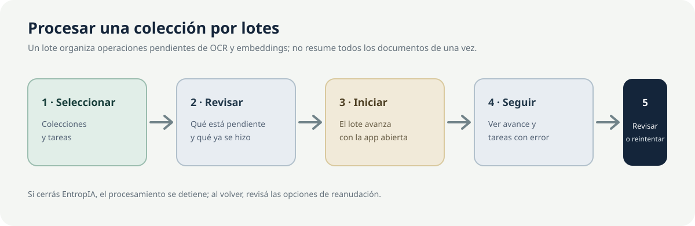
- Abrí Configuración → Lotes y seleccioná una o varias colecciones. Seleccionar todas marca todas las disponibles.
- Elegí OCR para reconocer palabras en imágenes o PDF, Embeddings para preparar una comparación por semejanza, o ambas tareas. Después, pulsá Analizar selección.
- Revisá qué documentos y tareas incluye la propuesta. Si el alcance no es correcto, descartala.
- Cuando termine el análisis, pulsá Iniciar lote.
- Seguí el estado en la pestaña o desde el indicador de lotes de la barra inferior.
No hace falta repetir las tareas ya completas. La comparación por semejanza solo se prepara cuando hay texto. El lote avanza mientras EntropIA está abierta; si cerrás la aplicación, se detiene. Si volvés y quedan tareas pendientes, revisá cuáles faltan y leé sus mensajes antes de continuar.
Cuando la interfaz lo permite, podés Pausar, Reanudar o Cancelar. Abrí una tarea fallida para leer el mensaje y volvé a intentarla. La pestaña separa los lotes en curso de los anteriores; Cargar más muestra los registros previos.
En Lite, reconocer texto y comparar materiales depende de servicios por Internet y claves configuradas. Que el lote muestre avance no garantiza que el servicio esté disponible ni que cada tarea termine correctamente.
Capítulo 15. Sincronización y nube
La sincronización es opcional. Si trabajás en un solo equipo, podés dejarla desactivada. Al activarla, EntropIA envía los datos incluidos en la sincronización a su servicio en la nube. Revisá qué información se sincroniza y las condiciones del servicio antes de iniciar sesión.
15.1. Iniciar sesión y sincronizar
- Abrí Configuración → Sincronización.
- Iniciá sesión con tu cuenta o registrate si la opción está disponible. La contraseña nueva debe tener al menos 10 caracteres.
- Una vez dentro, usá Sincronizar ahora o activá Sincronización automática y elegí su intervalo.
- Revisá los equipos conectados, el espacio disponible y tu plan. Desconectá los equipos que ya no uses.
- Para dejar de usar la cuenta en este equipo, usá Cerrar sesión.
EntropIA Lite usa el servicio incluido; no podés cambiar su dirección ni elegir colecciones individuales para sincronizar. Si la primera sincronización incluye más de 500 MiB (unos 525 MB), EntropIA te pide confirmación antes de continuar.
15.2. Estados, errores y datos
El indicador inferior puede mostrar que la sincronización está al día, que hay actividad, falta de conexión, un error, diferencias entre equipos o un aviso relacionado con la hora del dispositivo. Pulsalo para abrir la configuración y leer más detalles. Si hay diferencias, revisalas antes de asumir que ambos equipos tienen el mismo contenido.
Re-verificar archivos vuelve a enviar los archivos al servicio para comprobarlos; no sirve como copia de respaldo. Borrar mis datos del servidor elimina los datos remotos con confirmación, pero conserva los de este equipo.
Importante: los manuscritos de Escritura permanecen en el equipo donde se crearon y no forman parte de la sincronización general. Exportalos aparte si necesitás pasarlos a otro dispositivo. Las notas asociadas a documentos pueden sincronizarse cuando configurás la cuenta.
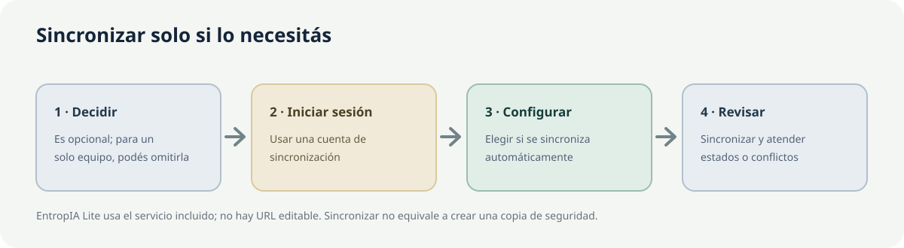
Capítulo 16. Configuración y herramientas generales
Abrí Configuración con el botón de engranaje de la barra superior. En Lite aparecen estas pestañas:
| Pestaña | Para qué sirve | Recomendación inicial |
|---|---|---|
| APIs remotas | Conectar los servicios que reconocen texto, transcriben audio y ayudan con tareas de IA. | Configurá solo los que vayas a usar; probá la conexión y guardá. |
| Prompts | Revisar las instrucciones que EntropIA sigue al corregir texto, resumir o proponer nombres y relaciones. | Conservá los valores iniciales si no necesitás cambiarlos. |
| Model Params | Ajustar el modelo y la forma en que prepara cada respuesta. | Dejá los valores predeterminados. |
| RAG Params | Elegir qué pasajes de tus documentos consulta el Chat, cuántos usa y cuánto de la conversación previa considera. | Dejá los valores predeterminados hasta tener una necesidad concreta. |
| Sincronización | Conectar la cuenta y compartir datos entre equipos. | No la actives si no necesitás usar más de un equipo. |
| Lotes | Reconocer texto y preparar varios documentos para compararlos. | Ejecutá primero una prueba con una colección pequeña. |
| Logs | Leer mensajes de actividad y error. | Anotá el mensaje visible antes de compartirlo con soporte. |
La pestaña Dependencias de IA no aparece en Lite. Esta variante no permite elegir los motores locales incluidos en Pro.
16.1. Configurar proveedores
En APIs remotas:
- Buscá el proveedor de la tarea que necesitás.
- Pegá la clave de acceso en API Key. Usá el control para mostrarla u ocultarla al revisarla.
- Pulsá Probar conexión.
- Cuando la prueba sea correcta, pulsá Guardar cambios.
| Proveedor | Funciones de Lite que lo utilizan |
|---|---|
| GLM-OCR / z.ai | OCRH de imágenes y PDF compatibles. |
| AssemblyAI | Transcribe audio y permite dictar con el micrófono. Si está disponible, también identifica quién habla en audios de tus colecciones. |
| OpenRouter | Ayuda a corregir textos, resumir, conversar con tus documentos y proponer nombres o relaciones. También permite elegir los modelos utilizados. |
Una clave válida no garantiza que el servicio esté funcionando ni que tu cuenta permita más usos en ese momento. Antes de enviar material sensible, revisá cómo trata los datos el servicio. EntropIA envía el contenido necesario para reconocer, transcribir o generar una respuesta.
16.2. Prompts, Model Params y RAG Params
Prompts permite revisar o cambiar las instrucciones. Validar cambios señala si falta algún requisito; Restaurar default recupera el texto inicial. Si los resultados empeoran después de un cambio, restaurá el valor predeterminado y guardá.
Model Params organiza ajustes para tareas como corregir texto, resumir o proponer nombres y relaciones. RAG Params permite elegir qué pasajes de tus documentos consulta el Chat, cuántos usa y cuánto de la conversación previa conserva. Para el uso habitual, dejá estos controles como están. Si los cambiás, anotá los valores anteriores.
16.3. Apariencia, idioma y accesibilidad visual
Los siguientes controles están en la barra superior y no en las pestañas de configuración:
- Tema: Oscuro, Cálido, Claro o Lite. «Lite» es el nombre de un tema visual; no es un cambio de producto a Pro.
- Contraste: Contraste suave, Contraste normal o Contraste alto.
- Zoom: pulsá + o −, o Restablecer zoom. El intervalo es 75 %–125 % en pasos de 5 %. En Windows podés usar Ctrl +, Ctrl − y Ctrl 0.
- Tipografía: opciones Académica, Moderna, Editorial y Archivo.
- Idioma: ES o EN. Cambia los textos de la interfaz, no el idioma de tus documentos.
- Panel lateral: en una sola pantalla y dentro de Colecciones, Ctrl+B contrae o muestra el explorador. En vista dividida, el explorador se abre como panel sobre el área activa; ver pestañas y vista dividida.
- Pestañas y vista dividida: permiten trabajar con hasta cuatro recorridos y ver dos a la vez. No están dentro de Configuración.
16.4. Base de datos, estado y avisos
El botón Base de datos abre Consulta DB, una página de solo lectura para consultar listas de datos, buscar y ordenar sus elementos y descargar una tabla como JSON o CSV. No permite recuperar documentos ni guardar una copia de seguridad completa.
La barra inferior también muestra los lotes, la sincronización y, cuando corresponde, la campana de notificaciones. Un aviso de actualización puede ofrecer Ver actualización, que abre la ficha de Microsoft Store; no instala la actualización. El pie también incluye enlaces a GitHub y HLab.
Capítulo 17. Exportar y descargar
Elegí el formato según lo que quieras conservar. Los botones de exportación no son equivalentes y no todos incluyen archivos originales.
| Desde | Acción/formato | Qué guardar o tener en cuenta |
|---|---|---|
| Colección | Exportar JSON | Guarda datos de la colección, pero no incluye los PDF, imágenes ni audios originales. No podés usarlo para reconstruir la colección. |
| Documento → Texto | Descargar como Markdown, PDF o Word (.docx). |
Texto reconocido en la página o archivo seleccionado. |
| Chat de investigación | Descargar conversación como PDF. | Guarda la conversación, no un informe completo de investigación. |
| Investigación | Descargar como Markdown, HTML o Word (.docx). |
Guarda el informe y las fuentes disponibles; no hay opción PDF en esa pantalla. |
| Escritura | Descargar como Markdown, HTML o Word (.docx). |
Guarda el manuscrito actual; Escritura no ofrece descarga PDF. |
| Escritura → Exportar | Elegir cómo aparecen las citas y activar Incluir bibliografía. | Son preferencias de descarga, no un botón para descargar. La bibliografía incluye las obras de Zotero citadas. |
| Análisis textual de colección | Descargar gráfico como PNG. | Guarda el gráfico de frecuencias, no los documentos originales. |
| Consulta DB | Descargar una tabla como JSON o CSV. | Guarda los datos de la tabla seleccionada, no una copia de seguridad completa. |
17.1. Preferencias de citas en Escritura
En Escritura → Exportar, elegí cómo aparecen las citas de los pasajes que insertaste desde tus documentos:
- Nota al pie.
- Referencia breve.
- Comentario.
- Texto citado y nota.
También podés activar Incluir bibliografía para las obras de Zotero citadas. Markdown no admite comentarios; EntropIA los convierte en notas al pie y te avisa. Si Word no puede conservar un elemento del formato elegido, la descarga se detiene y explica qué se perdería.
17.2. Diferencia entre exportar y respaldar
El archivo JSON de la colección, el CSV de una tabla y los documentos descargados no guardan todos los archivos y datos necesarios para recuperar EntropIA. Conservá los originales y los manuscritos exportados en una copia de seguridad de tu organización. La sincronización en la nube tampoco reemplaza esa copia.
Capítulo 18. Ejemplos paso a paso
18.1. Tengo un PDF escaneado y quiero buscar su contenido
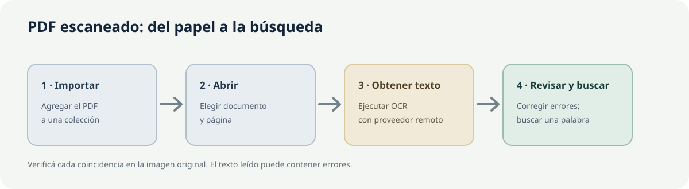
- Creá o elegí una colección y pulsá Importar documento.
- Abrí el PDF y elegí su primera página.
- En Texto, ejecutá OCRH. Necesitás GLM-OCR configurado y conexión.
- Compará el texto con la imagen; corregí nombres o cifras mal leídos.
- Buscá una palabra en Búsquedas o en la barra superior. Si no aparece, usá Análisis → INDEX y repetí la búsqueda.
18.2. Tengo fotografías de documentos de archivo
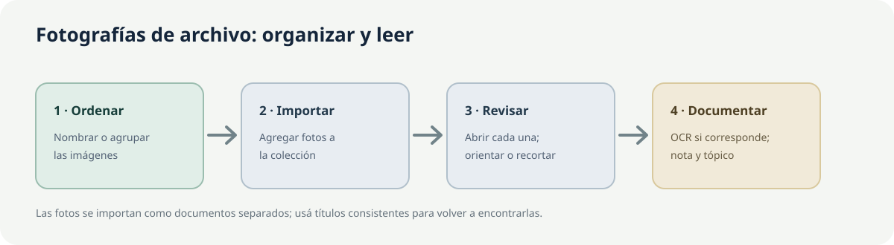
- Conservá originales y usá nombres que indiquen fondo, fecha o número de pieza.
- Importá las imágenes a la colección. Cada foto será un documento separado.
- Abrí cada foto; si hace falta, orientá o recortá una copia para facilitar la lectura.
- En Texto, ejecutá OCRH sobre PNG/JPG, revisá el resultado y agregá un tópico o nota de procedencia.
- Usá la búsqueda para localizar palabras y abrí cada coincidencia en su imagen original.
18.3. Quiero encontrar un tema en muchos documentos
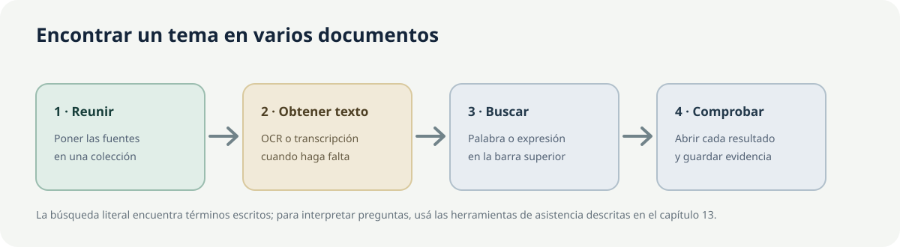
- Reuní las fuentes de trabajo en una o más colecciones.
- Obtené el texto que falte y corregí errores que afecten la búsqueda.
- Buscá términos concretos desde la barra superior o Búsquedas; verificá cada resultado y su colección.
- Para una pregunta amplia sobre varias fuentes, usá Chat de investigación; para un informe con alcance por colecciones, usá Investigar.
- Guardá pasajes relevantes como notas con referencia a la fuente.
18.4. Quiero resumir y analizar varios documentos
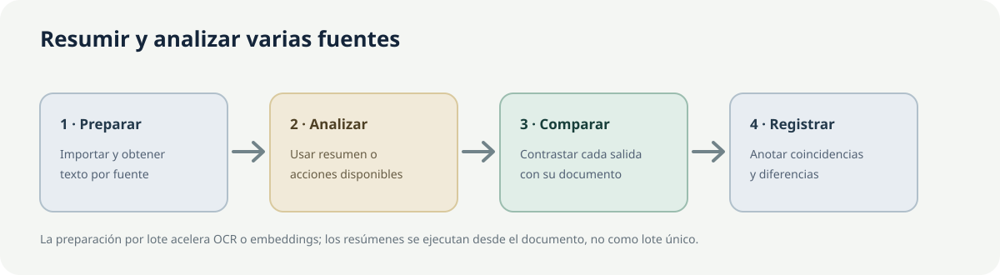
- Importá las fuentes y obtené el texto de cada documento que lo necesite.
- Abrí cada documento y usá OCRR/Resumen para resumirlo, NER para proponer nombres de personas o lugares, o TRIPLET para sugerir relaciones, como quién hizo qué. Son acciones por documento; los lotes no crean un resumen general.
- Contrastá cada salida con su texto original; usá Análisis textual en la colección para observar frecuencias de palabras.
- Registrá coincidencias y diferencias en notas, citando qué documento las respalda.
18.5. Quiero redactar un texto académico a partir de mis documentos
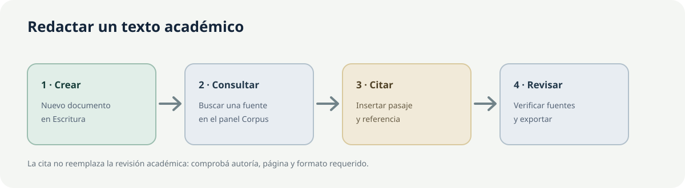
- En Escritura, creá un Documento nuevo y escribí el título.
- En la pestaña Corpus, buscá un pasaje y usá Insertar como cita.
- Si usás bibliografía Zotero, conectá Zotero, encontrá la obra y pulsá Citar; después revisá Ajustar la cita.
- Redactá el argumento y verificá citas, páginas y bibliografía contra las fuentes.
- En Exportar, elegí la representación de citas y descargá el manuscrito como Markdown, HTML o Word.
18.6. Quiero tomar notas y usarlas más tarde al escribir
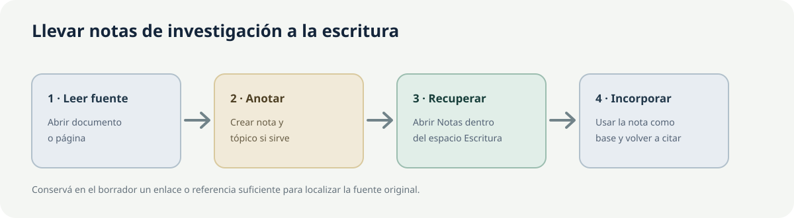
- Abrí el documento o página y creá una nota en Notas; agregá un tópico si ayuda a clasificarla.
- Abrí Escritura → Notas, buscá el documento de origen y revisá la nota.
- Elegí Insertar como texto para copiar su contenido o Insertar como vínculo para conservar un enlace.
- Incorporá la nota al borrador y volvé a la fuente antes de convertirla en una cita o afirmación.
Capítulo 19. ¿Qué hago si…?
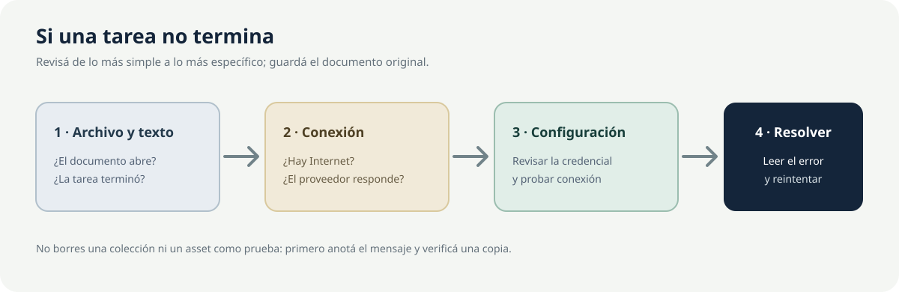
| Problema | Qué revisar |
|---|---|
| No aparece texto después de importar | La importación no reconoce texto automáticamente. Abrí Texto y usá OCRH para una imagen o PDF compatible, o STT para pasar el audio a texto. |
| El reconocimiento de texto produjo errores | Compará el resultado con la imagen y corregí lo necesario. Para fotos, usá PNG/JPG y revisá que la imagen no esté borrosa, inclinada u oscura. |
| OCRH no está disponible o da error | En Lite, el reconocimiento de texto necesita Internet. Revisá GLM-OCR en Configuración → APIs remotas, probá la conexión y guardá los cambios. |
| No encuentro un documento | Abrí la colección correcta, limpiá los filtros y buscá por nombre en Buscar documentos... o usá la búsqueda superior. |
| Una búsqueda no devuelve resultados | Comprobá que se haya reconocido el texto de la página correcta. En Análisis, pulsá INDEX para prepararlo y probá una palabra más breve o escrita de otra manera. |
| Assets similares no muestra resultados | Comprobá que la página o archivo tenga texto y que EMBED haya terminado. En Lite, revisá la conexión con OpenRouter. |
| Falla una operación de IA | Revisá la conexión y la clave de acceso del servicio correspondiente. Leé el mensaje antes de repetir la operación. |
| No hay un modelo disponible | Lite usa servicios de IA por Internet. Revisá qué modelo está seleccionado en OpenRouter y si está disponible para tu cuenta. |
| No puedo procesar un archivo | Confirmá que el archivo se pueda abrir y esté en un formato admitido. Para reconocer texto, probá con una copia PNG/JPG o PDF compatible. |
| Un lote muestra un error | Abrí Configuración → Lotes, expandí la tarea y leé el mensaje. Corregí primero el problema y después volvé a intentarla. |
| No puedo sincronizar | Revisá el estado inferior, la conexión y la sesión. En Configuración → Sincronización y Logs podés leer más detalles; no borres datos como prueba. |
| Zotero no aparece en Escritura | Abrí Zotero y habilitá Permitir que otras aplicaciones se comuniquen con Zotero en Editar → Configuración → Avanzado. Después, volvé a Escritura → Zotero y usá Actualizar si está disponible. |
| Escritura no guardó un cambio | Esperá el estado Guardado. Si aparece Error de guardado, pulsá Reintentar si está disponible y copiá el texto importante antes de cerrar. |
| No puedo restaurar una versión de Escritura | EntropIA muestra un número de revisión, pero no permite abrir versiones anteriores ni restaurarlas. Exportá el texto mientras esté abierto. |
| No puedo abrir otra pestaña | El máximo es 4. Cerrá una con Cerrar pestaña y volvé a pulsar Abrir nueva pestaña. |
| No veo el explorador en vista dividida | No queda fijo a la izquierda. En el panel activo, pulsá Abrir explorador de documentos. Esc lo cierra. |
| Escritura aparece en otra pestaña | Solo puede estar abierta en una. Elegí esa pestaña o pulsá Ir a esa pestaña. |
| Documento nuevo no creó otro manuscrito | Si el abierto sigue en Sin título y vacío, EntropIA lo reutiliza. Ponele un título o escribí algo antes de crear otro. |
Antes de recurrir a ayuda, anotá el nombre de la pantalla, el paso, el mensaje exacto, el formato del archivo y la versión que aparece en la barra inferior. No compartas claves de proveedor ni documentos sensibles en capturas.
Capítulo 20. Consejos y buenas prácticas
Consejo
Nombrá colecciones y archivos con palabras que usarías para volver a encontrarlos. Guardá título, fecha y procedencia también en una nota cuando sean relevantes.
Consejo
Probá OCR en una página antes de procesar un lote grande. Corregí errores claros y conservá la imagen o PDF para revisar el resultado.
Importante
En Lite, OCR, transcripción, Chat y muchas acciones de IA envían contenido al proveedor externo que realiza la tarea. La sincronización envía datos al servicio de nube solo cuando configurás una cuenta y la activás. Revisá las condiciones del proveedor antes de usar material confidencial.
Importante
Una coincidencia de búsqueda, una comparación automática o una respuesta de la aplicación son pistas. Contrastá siempre el pasaje, la página y la referencia con el material original.
Atención
Eliminar una colección o un documento puede borrar sus datos y archivos asociados. Si eliminás una página o archivo citado, el pasaje guardado puede dejar de abrir la fuente. El archivo JSON de la colección no incluye los documentos originales ni permite reconstruirla. Conservá esos originales y exportá los manuscritos que necesites.
Atención
Los documentos creados en Escritura no se sincronizan entre dispositivos. Guardá una copia en una carpeta segura o en otro dispositivo antes de cambiar de equipo.
Capítulo 21. Glosario
- Asset: palabra que aparece en algunos controles para referirse a una página o archivo dentro de un documento.
- Búsqueda FTS: encuentra las mismas palabras que aparecen en el texto; no busca sinónimos.
- Colección: grupo de documentos reunidos para un tema o proyecto.
- Corpus: conjunto de documentos y colecciones que reunís para trabajar.
- Embedding: forma de representar el texto para sugerir páginas o documentos que tratan temas parecidos.
- Entidad: nombre o dato identificado en un texto, como una persona, un lugar o una fecha.
- Ítem: palabra que algunos mensajes de EntropIA usan para referirse a un documento.
- Layout: herramienta que marca zonas de una página, como títulos, párrafos, tablas o figuras.
- Metadatos: datos que describen un archivo o documento.
- Modelo de IA: servicio que propone texto, resúmenes o análisis a partir de una instrucción y material relacionado.
- OCR: reconocimiento de palabras visibles en imágenes o PDF escaneados.
- OpenRouter: servicio por Internet que Lite usa para algunas tareas de texto y análisis.
- RAG / recuperación: opción para que el Chat consulte pasajes de tus documentos antes de responder.
- STT: conversión de voz o audio a texto.
- Tópico: etiqueta que ayuda a clasificar documentos.
- Tripleta: forma de registrar una relación; por ejemplo, quién realizó una acción.
- Vista dividida: dos pestañas visibles al mismo tiempo.
- Pestaña: pantalla de trabajo independiente. EntropIA permite hasta cuatro.
Índice y navegación
Podés leer el manual en orden o abrir el capítulo que explica cada tarea. Las referencias te llevan a explicaciones relacionadas; volvé a este índice cuando quieras elegir otra herramienta.
Documento complementario: Inventario de funciones de EntropIA Lite.